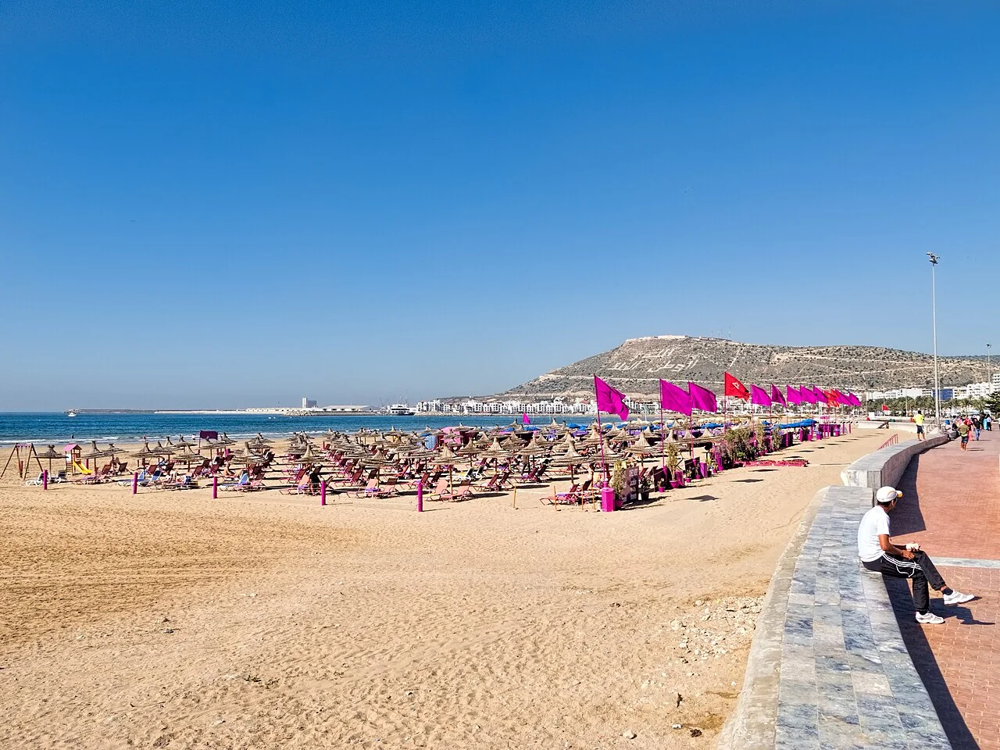

Plage d’Agadir
Agadir, Maroc · baignade, paddle

Longue baie de sable fin au pied de la corniche d’Agadir : plus de 10 km selon Lonely Planet, qui la dit protégée des vents. On s’y baigne, on joue au beach-volley, on fait du jet-ski et du paddle. Wikipédia en fait une destination de soleil d’hiver : en janvier, il fait 20,5 °C à midi en moyenne. La mer reste fraîche, environ 18,5 °C en décembre et 17,5 °C en janvier (Climats et Voyages).
- Lieu
- Agadir, Maroc
- Niveau
- Variable selon les conditions
- Activités
- baignade, paddle
- Type d'eau
- Mer / océan
- Coordonnées
- 30.40, -9.60 (position approximative du secteur)
Dangers à connaître
- Après de fortes pluies, des trous et des courants dangereux sont apparus entre l’hôtel Amadil et l’hôtel Robinson, vers l’oued El Houar (Le360, 2025).
- Les plages sont surveillées, mais les sauveteurs manquent (Le360). Un plongeur cité par l’article dit qu’ils travaillent de 8 h à 20 h, et un couple a dû être sauvé vers 21 h.
- Des drapeaux noirs et des panneaux marquent les zones interdites à la baignade (Le360) : respecte-les.
Le conseil d'Ocean Buddy
Baigne-toi quand les maîtres-nageurs sont là, respecte les drapeaux et les panneaux, et ne nage pas la nuit.
Ouvrir dans Ocean Buddy Télécharger sur l'App Store
Source : Fiche Ocean Buddy · décembre 2026 · d’après Wikipédia, Lonely Planet, Le360 et Climats et Voyages · à vérifier localement.